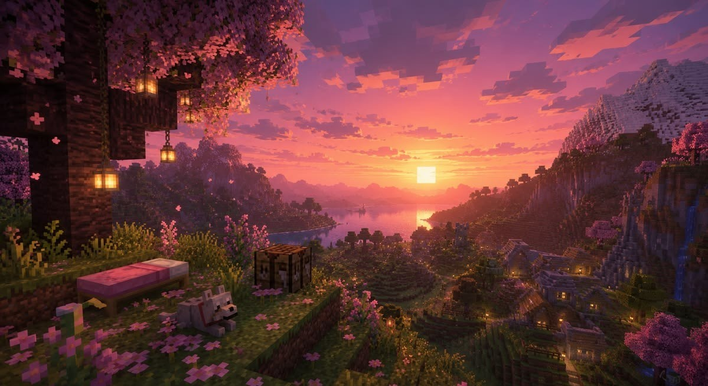
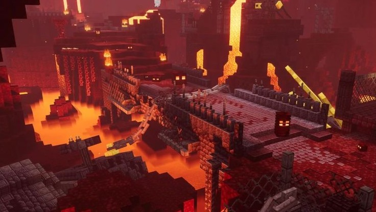
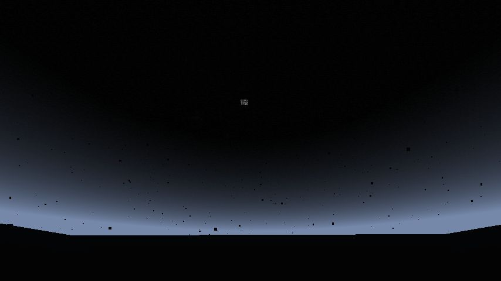
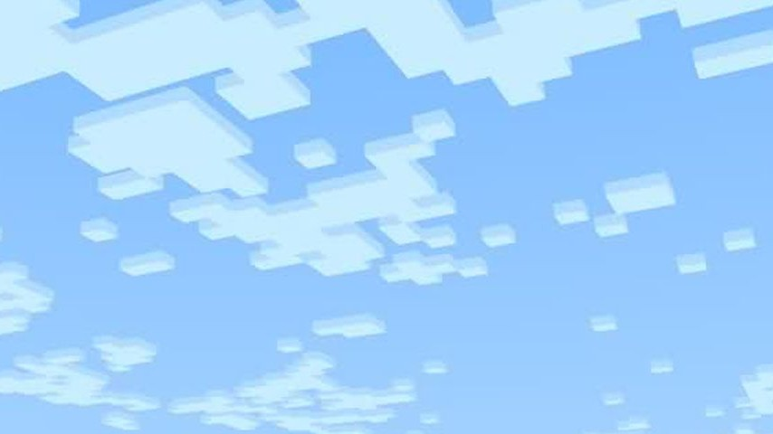

O minecraft, como muitos sabem, é um jogo de exploração e simulação. Dentro do jogo, nós temos algumas dimensões para serem exploradas e algumas que não foram implementadas. São elas:
É importante ressaltar que, mesmo que o jogador esteja em qualquer dimensão que não seja a superfíce, o dia e a noite continuam a correr normal no mundo do jogo, só que de maneiras diferentes.
A superfíce é o local que o jogador nasce no Minecraft. Além de ser o principal local do jogo, ele tem suas características própria, sendo algumas delas:


Uma dimensão infernal, caracterizada principalmente por seus oceanos e rios de lava e fogo. Para acessar a dimensão, é necessário um portal do Nether. Criaturas como Ghasts e Piglins, biomas e estruturas como bastões remanescentes aparecem pelo Nether, diferentemente do que se vê na superfíce.


O End (ou Fim, com diz o nome) é a dimensão final do Minecraft, em que reside o boss principal do jogo (Dragão do End). Criaturas como o Enderman são geradas naturalmente pela dimensão. Estruturas como pilares de obsidiana, cidades e o céu escuro caracterizam o espaço. Itens considerados raros, como o Élitro, podem ser obtidos apenas nesta dimensão. E, da mesma fortma que o Nether, só pode ser acessado por meio de um portal que se encontra em uma fortaleza, estrutura gerada na superfíce. Este portal não pode ser feito pelo jogador.


No jogo, temos uma dimensão abaixo da rocha-mãe e uma dimensão não implementada. A dimensão abaixo da rocha-mãe é o Void (ou o Vazio, como diz o nome). Nele não há nada, só um local escuro que o jogador morre até no modo criativo se tentar acessar.
A dimensão não implementada é o Céu. Foi uma dimensão planejada mas seu código acabou sendo utilizado para fazer a dimensão anterior, o The End.
Essas são as dimensões, respectivamente:

